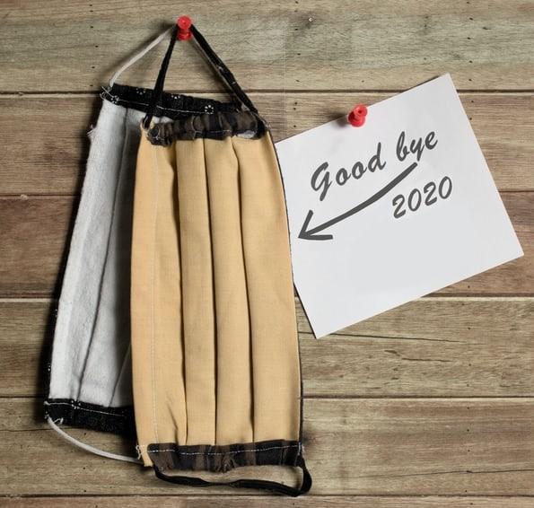

Ciao 2020!
4th January, 2021
Ciao 2020! So many people described 2020 as catastrophic, but I don’t think it was that bad. It was a rejuvenation, a break, that too a surprising
one. It was a reminder to the whole wide powerful and planning world, that sometimes all fool proof plans
can fail; the entire world as we know it, can just become unrecognizable; for only change is
permanent.
The bad news is time flies. The good news is you’re the pilot. Yet another year flew!
Coming back to 2020, the first quarter till March was so much like any other year, same
old classes, same old college, town bus travels, bakeries, restaurants, movie theatres and what
not. It falsely gave hope that everything would remain the same any day. I definitely wouldn't even have considered these worth noting,
if not for the pandemic. It just taught me, how we take things for granted. We never know the value of
something until we are deprived of it.
Then, the well-known panic phase, March to May, was not so much different. Occasional
online classes, hoarding groceries, playing indoor games, listening to granny’s stories again
after so long, too many movies, books and life went on. It was that much needed break for everyone
on globe. But somehow, difference crept in, some people were so much affected, the small shopkeepers, the
road vendors, the petty cash dealers, the theatre owners, the people whose lives and economies were
shattered in a quarantine lifestyle. But of course, with it grew the kinds of people who were fast enough to
adapt as situation demanded.

The next is my favourite part, “the learning phase” according to
me. Coursera courses opened my way to study things no one compelled me to study. My own interests made me
learn and try things, I never would have if there were no lockdown. Cooking small recipes, learning
vehicle riding, learning flower-tying, learning how things naturally worked from electricity to Internet
connections, building a portfolio site and starting to blog, somehow, I kept myself busy. I
wondered why I didn’t stay this inquisitive all my life. I was penitent that probably I had a set of
wrong priorities all this time.
“I am always ready to learn although I do not always like being taught.” – Winston Churchill
The ending of year 2020 along with my semester 5 was such a whirlwind taking us
along without any strong purpose. I was a bit ill at ease towards the end. But as usual, the Christmas Air,
the New Year brought hope and vigour.
“No matter how hard the past, you can always begin again.”
Actually, my observation this year, was that it was a well needed technology
upgradation for the entire world. The entire older generation became tech-savvy. The
teachers from kindergarten to professors learnt meet hacks, quiz creation and innovative ways of
teaching. Online exams and internet banking were accepted by the last few people who
still preferred offline exams and banks. New concepts of virtual weddings, functions and funerals came
into existence. LOL! And, most importantly, people left their reckless ways and started
becoming hygienic, wore masks at least for a few months.
You can get excited about the future. The past won’t mind.